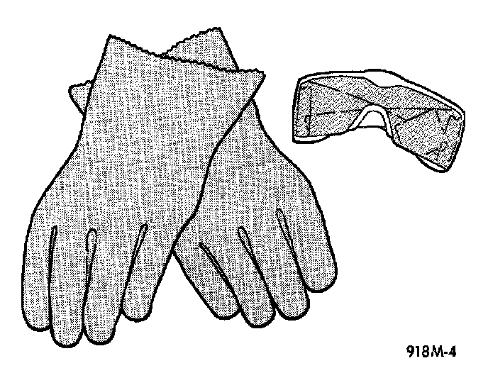
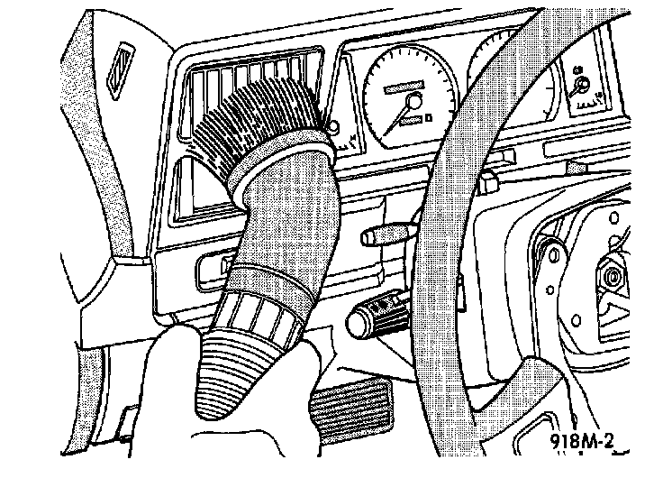

Cleanup Procedures
Wear Safety Glasses and Rubber Gloves - Typical:

Following an airbag system deployment, the vehicle interior will contain a powdery residue. This residue is primarily sodium bicarbonate (baking soda), used as an airbag cushion lubricant. However, there will also be traces of sodium hydroxide powder, a chemical by-product of the generant used for airbag deployment. Since this powder can irritate the skin, eyes, nose, or throat, be sure to wear safety glasses, rubber gloves, and a long-sleeved shirt during cleanup.
WARNING: If you experience skin irritation during cleanup, run cool water over the affected area. Also, if you experience irritation of the nose or throat, exit the vehicle for fresh air until the irritation ceases. If irritation continues, see a physician.
Begin the cleanup by removing the airbag modules from the vehicle as described in Airbag Module/Service and Repair. Use a vacuum cleaner to remove any residual powder from the vehicle interior. Clean from outside the vehicle and work your way inside, so that you avoid kneeling or sitting on a non-cleaned area.
Vacuum Heater and A/C Outlets - Typical:

Be sure to vacuum the heater and air conditioning outlets as well. Run the heater and air conditioning blower on the lowest speed setting and vacuum any powder expelled from the outlets. You may need to vacuum the interior of the vehicle a second time to recover all of the powder.
Place the deployed airbag modules in your vehicular scrap pile.